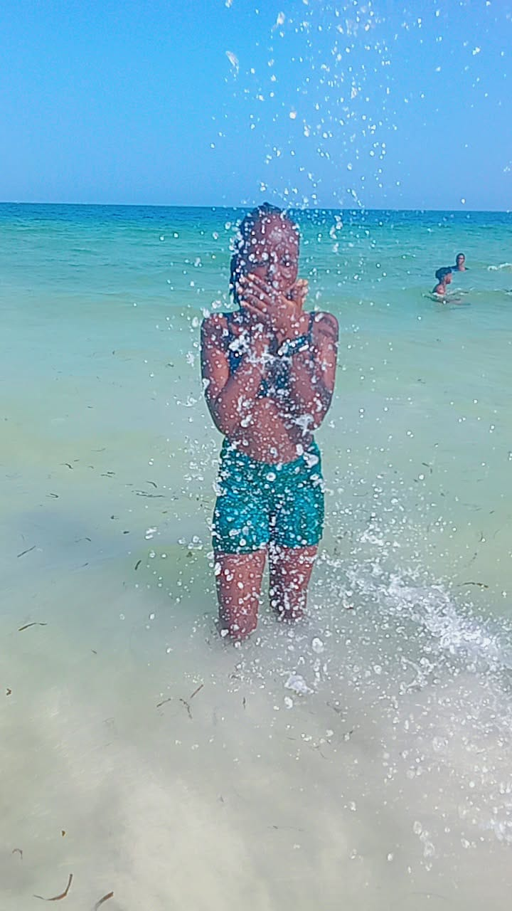
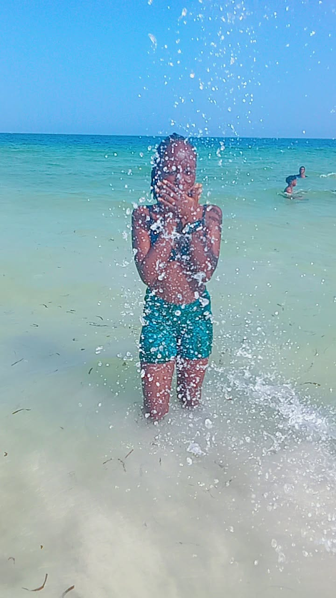

About Me
Have little details about me
- NAME; JOY RUTH
- AGE; 19 yrs
- DOB; 11/09/2006
- CONTACT; 0115552044
Hello, I'm Joy, a passionate Software Development Student.
I am a student at the Technical University of Mombasa undertaking Diploma in Computer Science. I am a first yr student who joined in May 2024.
In my free time i usually do research of the new technologies, i also enjoy cooking, listening to songs and going for adventures... one thing about me that still scares me is how i love adventures but never experienced such fun out of it because i have a strict parent ...
Oh yes i am that girl who lives with her mom, my mom has been my everything and the funny part is that i have never heard of any details about my biological dad.. probably you are wondering how and i have a dad right?😂What most of you dont know is that i have step-dad who has naver played a role of being a dad in my life ... i am that girl who has never experienced fatherly love and dont know what a fatherly love is me having tosee my mom struggling with me till this age i am in right now has made me want to be the person my mom is (not a single) but a stron independent woman
Have you ever been afraid of falling in love?🤔 My answer is yes .. i am afraid of falling in-love and also afraid of being heart-broken... They say heartbreak makes one strong and independent but to me no that thing sucks ... jus imaine fallin inlove with someone then the person decides to leave you without telling you what wrong you've done not even that the worst part is that you being in arelationship with the person you love and the person goes behind your back by loving another person so you all say that is love ... After all life must continue
I have been able to keep up a smile yet deep down my heart has been bleeding craving for love and assuarity, yeah i have all that from my mom but the reason as to why this happens to me is because i was once deceived by a friend
You know what sucks the most? rowing up knowing you have big brothers and sister but coming to realise that the sister is talking ill about your mom to her relatives the brother wants to have you as her girlfriend ..this has made me realise waaah i have met MEDUSA at a young age😭😭😭😭
I have alot to talk about but let me stop at this point
Image Gallery

.jpeg)
.jpeg)
.jpeg)
.jpeg)
.jpeg)
.jpeg)
.jpeg) 
